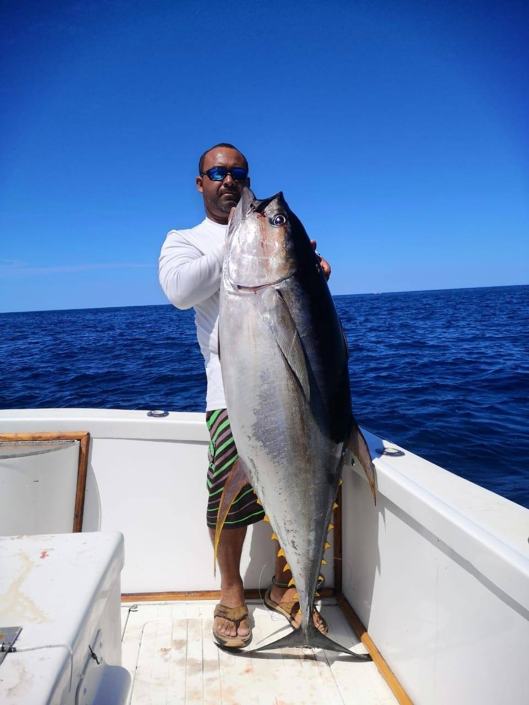
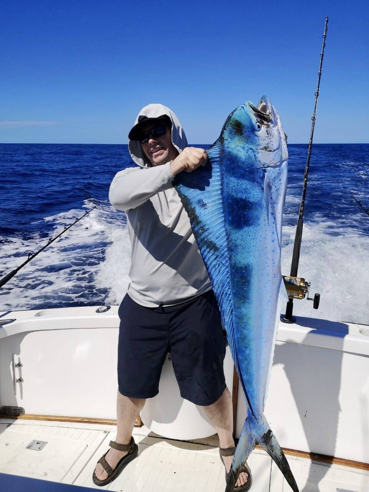
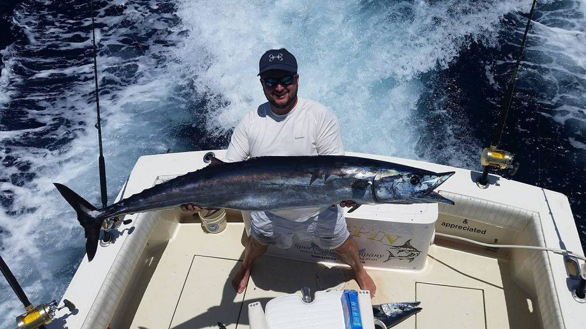
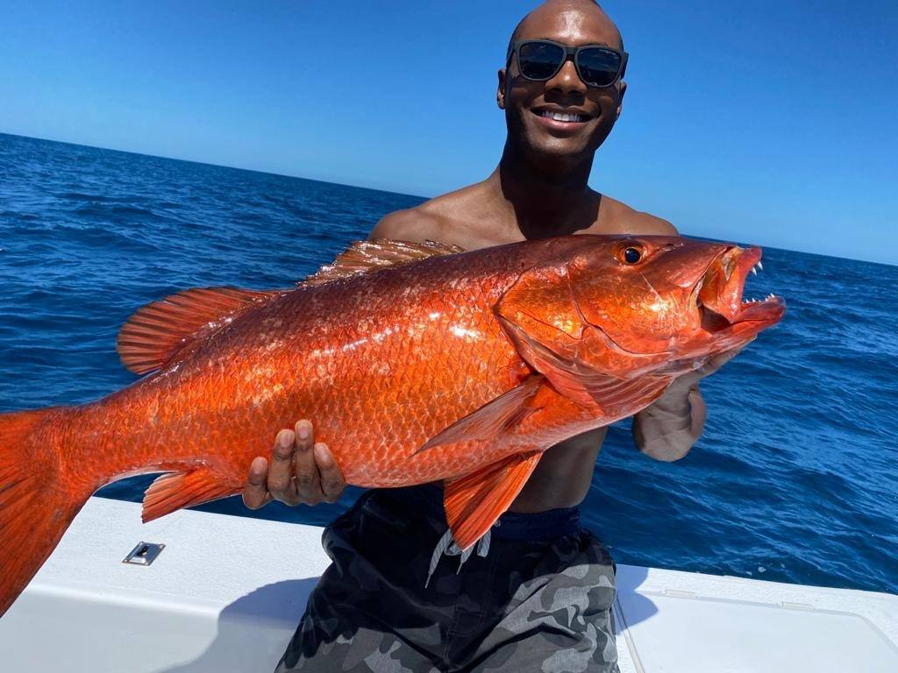

What's biting, month by month
A guide, not a promise. Fish move with water temperature and bait. Ask us about the week you are coming and we will tell you what the boats have been seeing.
| Species | Jan | Feb | Mar | Apr | May | Jun | Jul | Aug | Sep | Oct | Nov | Dec |
|---|---|---|---|---|---|---|---|---|---|---|---|---|
| Sailfish | ||||||||||||
| Blue, black & striped marlin | ||||||||||||
| Yellowfin tuna | ||||||||||||
| Mahi mahi (dorado) | ||||||||||||
| Roosterfish | ||||||||||||
| Wahoo | ||||||||||||
| Snapper |
Sailfish
Not as big as a marlin, but every bit as spectacular: aerial leaps and lightning runs. Sailfish are here year-round thanks to the live bait in these waters, with the best numbers from May to August. A 3/4 or full day gets you offshore to them.

Blue, black & striped marlin
Blue marlin dominate the dry season. Black marlin, which can push 1,500 pounds, headline the tournaments out of Flamingo Marina. Full day charters only, and every one is released.

Yellowfin tuna
Yellowfin, skipjack and bigeye from 30 pounds to 300-plus. Yellowfin is the best-eating tuna there is: the crew will fillet it, and half the restaurants in town will cook your catch.

Mahi mahi (dorado)
Bright, acrobatic and delicious. Dorado stack up around floating debris when the green-season rivers push out to sea, and stay strong into the early dry season.

Roosterfish
The signature inshore fish of Guanacaste, that comb of a dorsal fin cutting the surface behind a live bait. Roosters are caught along the rocks and beaches all year, and even a half day can put you on one.

Wahoo
Streamlined and fast, often 5 to 6 feet, with fish to 8 feet on record. The rocky coastline around Las Catalinas is the classic wahoo ground.

Snapper
Red snapper (pargo rojo) and the big cubera, the Pacific dog snapper, which runs 50 to 80 pounds and more. Half-day territory, and the best thing on the grill that night.
Boats stay inshore on half-day charters, which is roosterfish, snapper and jack water. To target sailfish, marlin, tuna and mahi you need a 3/4 or full day to get offshore where the continental shelf drops away. Compare the boats or start a trip plan.